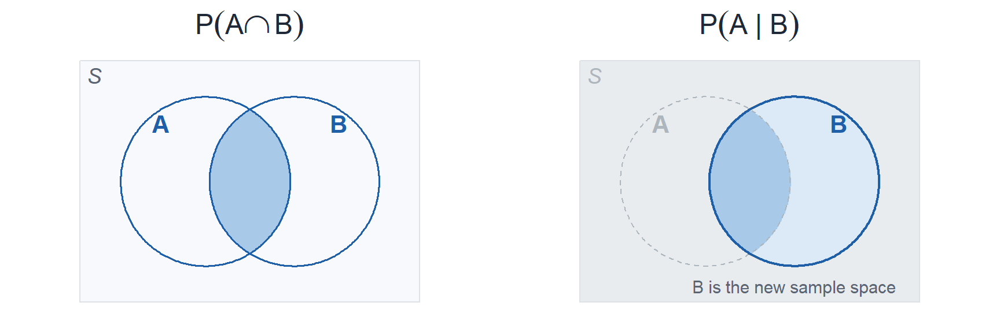
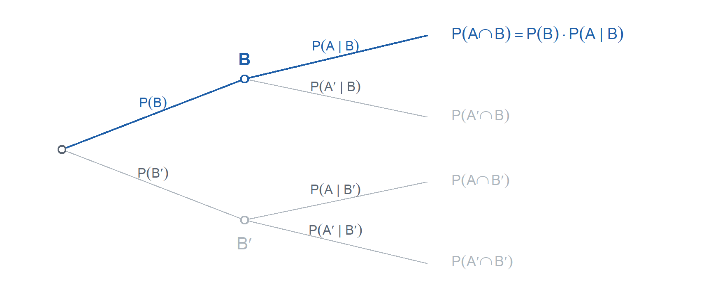
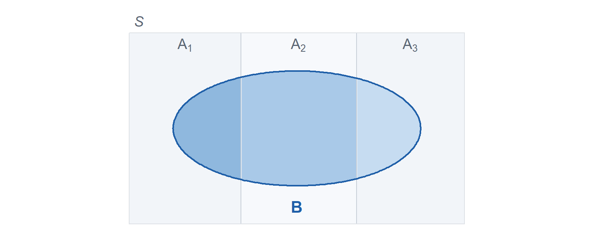
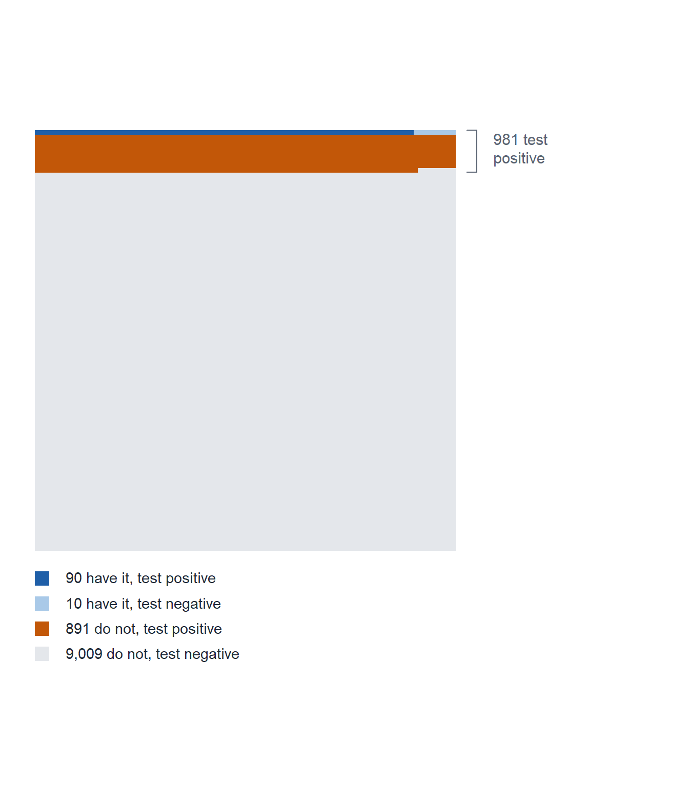

Forge 2
Lessons 4-6
Lessons 4-6: L4 Probability Basics, L5 Counting, L6 Conditional Probability
Coverage Plan
| Day | Date | Month | Class day | Hour | Room | Lesson | Out | Covered by | Who is available |
|---|---|---|---|---|---|---|---|---|---|
| Tue | 15 | Sep | 2 | D | TH321 | L11 | Day | Adams? | Crow, Freeny, Hedglin, Lovas, Ozga, Thomas |
| Wed | 16 | Sep | 1 | C | TH317 | L11 | Day | Crow? | Adams, Dykhuis, Hedglin, Lovas, Ozga, Thomas, Turner |
| Wed | 16 | Sep | 1 | D | TH317 | L11 | Day | Crow? | Adams, Dykhuis, Hedglin, Lovas, Ozga, Thomas |
| Tue | 15 | Sep | 2 | A | TH317 | L11 | Strack | Ozga? | Adams, Dykhuis, Freeny, Lovas, Turner |
| Wed | 16 | Sep | 1 | A | TH317 | L11 | Strack | Turner | Dykhuis, Freeny, Lovas, Ozga, Thomas |
| Wed | 16 | Sep | 1 | B | TH317 | L11 | Strack | Turner | Adams, Crow, Dykhuis, Freeny, Lovas, Ozga, Thomas |
| Wed | 16 | Sep | 1 | D | TH321 | L11 | Strack | Turner | Adams, Dykhuis, Hedglin, Lovas, Ozga, Thomas |
Already covered (5)
| Day | Date | Month | Class day | Hour | Room | Lesson | Out | Covered by | Who is available |
|---|---|---|---|---|---|---|---|---|---|
| Wed | 19 | Aug | 1 | E | TH321 | L2 | Lovas | Turner | Adams, Crow, Day, Dykhuis, Hedglin, Strack, Thomas |
| Thu | 20 | Aug | 2 | E | TH321 | L2 | Lovas | Day | Crow, Dykhuis, Freeny, Hedglin, Strack, Thomas, Turner |
| Thu | 20 | Aug | 2 | F | TH321 | L2 | Lovas | Day | Crow, Dykhuis, Freeny, Hedglin, Strack, Thomas, Turner |
| Fri | 21 | Aug | 2 | E | TH321 | L3 | Lovas | Day | Crow, Dykhuis, Freeny, Hedglin, Strack, Thomas, Turner |
| Fri | 21 | Aug | 2 | F | TH321 | L3 | Lovas | Day | Crow, Dykhuis, Freeny, Hedglin, Strack, Thomas, Turner |
Instructor lay down, who teaches which hour
Team 1 Team 2
| Day 1 | TH317 | TH319 | TH321 | TH322 |
|---|---|---|---|---|
| A | Strack | Hedglin | Adams | Crow |
| B | Strack | Hedglin | ||
| C | Day | Freeny | ||
| D | Day | Freeny | Strack | |
| E | Ozga | Freeny | Lovas | |
| F | Ozga | Freeny |
| Day 2 | TH317 | TH319 | TH321 | TH322 |
|---|---|---|---|---|
| A | Strack | Thomas | Hedglin | Crow |
| B | Turner | Thomas | ||
| C | Turner | Dykhuis | Hedglin | |
| D | Turner | Dykhuis | Day | |
| E | Ozga | Adams | Lovas | |
| F | Ozga | Adams | Lovas |
Team 1 (Crow, Day, Dykhuis, Freeny, Hedglin, Strack) is free Day 2 hours B, E, F.
Team 2 (Adams, Lovas, Ozga, Thomas, Turner) is free Day 1 hours B, C, D.
To Do
WPR I Feedback
Due 4 Sep. Send me your feedback on the draft.
Book Return
The bookstore listed Tintle (Wiley) by mistake. Our text is Devore, 9th ed.
- The window is two weeks from purchase, so cadets who bought in week 1 are running out of time. They start the return themselves at bncvirtual.com/westpoint, Your Account > Return Center
- Devore is free online through Cengage Unlimited. Hard copy is optional
- Screenshots of the return flow are on Forge 1
Vantage Accounts
Go to the MA206 workspace in Vantage.
WebAssign Enrollment
Real movement since Forge 1: 26 cadets are still wrong, down from 43. Of the 584 on the roster, 558 are clean. Fix your own sections from the MA206 ClassView roster before the next graded assignment posts.
Wrong day (3)
Drop the wrong class, enroll in the right one.
| Sec | Cadet | Move |
|---|---|---|
| A2 133 | Boskovic, Vasilija | 1 to 2 |
| E2 123 | Spaulding, Wyatt | 1 to 2 |
| F2 121 | Ramos, Christian | 1 to 2 |
In neither class (1)
Self enroll in the class that matches Add.
| Sec | Cadet | Add |
|---|---|---|
| F2 118 | Walker, Noah | 2 |
Not on the roster (2)
In WebAssign, not in ClassView.
| Cadet | In |
|---|---|
| Benson, Liam | Day 1 |
| Burns, Grace | Day 2 |
In both classes (20)
Drop the one that is not Keep. Flag it if they already have work there.
| Sec | Cadet | Keep |
|---|---|---|
| A1 130 | Pidgeon, Michael | 1 |
| B1 147 | Nam, Ryan | 1 |
| B1 147 | Yoo, Daniel | 1 |
| D1 110 | Price, Tyler | 1 |
| E1 126 | Brocken, Dwayne | 1 |
| A2 134 | Dortch, Cade | 2 |
| A2 134 | Nwawuihe, Godspower | 2 |
| A2 134 | Saftner, Peter | 2 |
| A2 135 | Gibson, Jonathan | 2 |
| B2 114 | Buseck, Linnora | 2 |
| B2 146 | Lee, Julia | 2 |
| B2 146 | Martin, Andrew | 2 |
| B2 146 | Sinkovic, Max | 2 |
| C2 148 | Williams, Brad | 2 |
| C2 148 | Williams, Caleb | 2 |
| D2 116 | Damodar, Sivin | 2 |
| D2 116 | Liu, Melanie | 2 |
| D2 141 | Ahn, Noah | 2 |
| F2 119 | Choi, Joseph | 2 |
| F2 121 | McNally, Kyle | 2 |
Six cadets sit in WebAssign under a non-.edu or alternate address and were matched by name, not email: Aquino Noah, Hunt Morgan, Needham Tobias, Jo Matthew, Williams Anna, and Andersen Mallorie (mallorie.smith@). All six are in the right day, no action needed.
Lesson 4: Probability Basics
Devore 2.2.
[Day 2 saw L4 on 25 Aug; Day 1 gets it Wed 26 Aug.]
Open with what a probability even is, because the two camps answer it differently.

Ronald A. Fisher, 1890 to 1962 The frequentist A probability is a long run relative frequency. Run the experiment over and over and \(P(A)\) is the proportion of times \(A\) happens.
Thomas Bayes, 1701 to 1761 The Bayesian A probability is a degree of belief, how strongly you expect something given what you know, updated as evidence arrives.
We teach it the frequentist way.
Lesson 5: Counting
Devore 2.3.
Every counting problem in 2.3 is one of these four cells. Drawing \(k\) objects from \(n\) distinct objects, the only two questions are whether order matters and whether an object can come back.
Without replacement
With replacement
Ordered
Without replacement Permutations \[P_{k,n} = \frac{n!}{(n-k)!}\] 10 people, pick 3 for a line: 720
With replacement Product rule \[n^{k}\] 3 draws from 10, each returned: 1000
Unordered
Without replacement Combinations \[C_{k,n} = \binom{n}{k} = \frac{n!}{k!\,(n-k)!}\] 10 people, pick a committee of 3: 120
With replacement Not in Devore \[\binom{n+k-1}{k}\] 3 scoops from 10 flavors, repeats allowed: 220
Section 2.3 gives three of the four: the product rule, \(P_{k,n}\), and \(C_{k,n}\). Unordered with replacement is not in the text and is not on any graded event. It is there so the picture is closed, not to assign.
Stretch Example Problem
1 The string You are writing a string of exactly 10 zeros and 4 ones. How many strings can you write?
2 The shooter You finish the game 4 for 14 from the field. How many different ways could those makes and misses have fallen?
3 The walk Starting at \((0,0)\), you move to \((10,4)\) going only right or up. How many ways can you do this?
4 The box The mess hall has 5 flavors of donut and you are taking back a box of 10. Unlimited of any flavor, and a box is just a box, so what order they sit in does not matter. How many different boxes are there?
Answers
All four are \(\mathbf{1001}\).
1. The string. Unordered, without replacement. You are choosing which 4 of the 14 slots hold a one: \(\binom{14}{4} = 1001\). A slot cannot be chosen twice and the order you filled them in is not part of the answer.
2. The shooter. Unordered, without replacement. Same cell, same count: choose which 4 of the 14 attempts went in, \(\binom{14}{4} = 1001\). Write a make as a one and a miss as a zero and this is problem 1 with different clothes.
3. The walk. Ordered, with replacement. Getting there takes 10 rights and 4 ups, so 14 steps, and each one is a free choice of two: \(2^{14} = 16{,}384\) sequences in all. Finishing at \((10,4)\) means exactly 4 of the 14 steps were up: \(\binom{14}{4} = 1001\). Call right a zero and up a one and you are back at problem 1.
4. The box. Unordered, with replacement. Stars and bars. Ten donuts and 4 dividers to separate 5 flavors: \(\binom{10+5-1}{10} = \binom{14}{10} = 1001\). Those 4 dividers are the 4 ones again.
Nobody’s problem lands in the fourth cell, ordered without replacement, and it is worth walking there anyway. Place the four ones into the 14 slots one at a time: \(14 \cdot 13 \cdot 12 \cdot 11 = P_{4,14} = 24{,}024\). That counts every string \(4! = 24\) times, once for each order you could have dropped the identical ones in, so \(24{,}024 / 24 = 1001\). That is \(C_{k,n} = P_{k,n} / k!\) in the open.
Lesson 6: Conditional Probability
Devore 2.4.
Formulas
Conditional probability, for \(P(B) > 0\): \[P(A \mid B) = \frac{P(A \cap B)}{P(B)}\]
Multiplication rule: \[P(A \cap B) = P(A \mid B)\,P(B) = P(B \mid A)\,P(A)\]

Law of total probability, for a partition \(A_1, \ldots, A_k\) of \(\mathcal{S}\): \[P(B) = \sum_{i=1}^{k} P(B \mid A_i)\,P(A_i)\]

\(B\) is chopped into one piece per slab, and the pieces cannot overlap, so their probabilities add.
Bayes’ Theorem: \[P(A_j \mid B) = \frac{P(B \mid A_j)\,P(A_j)}{\displaystyle\sum_{i=1}^{k} P(B \mid A_i)\,P(A_i)}\]
Bayes Example: Cancer Screening
A screening test for a cancer is given to everyone in a population. In that population:
- 1 percent actually have the cancer.
- Of the people who have it, the test is positive 90 percent of the time.
- Of the people who do not have it, the test is positive 9 percent of the time.
A patient tests positive. What is the probability the patient has the cancer?
Name the events:
- \(C\) = has the cancer, \(C'\) = does not have the cancer
- \(+\) = the test comes back positive
The four probabilities you are given:
- \(P(C) = 0.01\), the share who have it
- \(P(C') = 0.99\), the share who do not
- \(P(+ \mid C) = 0.90\), positive given they have it
- \(P(+ \mid C') = 0.09\), positive given they do not
The question asks for \(P(C \mid +)\), which is the reverse of what you were handed. That is the whole reason Bayes exists.
\[P(C \mid +) = \frac{P(+ \mid C)\,P(C)}{P(+ \mid C)\,P(C) + P(+ \mid C')\,P(C')}\]
\[P(C \mid +) = \frac{(0.90)(0.01)}{(0.90)(0.01) + (0.09)(0.99)} = \frac{0.0090}{0.0090 + 0.0891} = \frac{0.0090}{0.0981} \approx 0.092\]
About 9 percent. The denominator is the law of total probability: \(P(+) = 0.0981\), and only \(0.0090\) of that comes from people who actually have the cancer.
The same answer as 10,000 people, one square each:

Of the \(90 + 891 = 981\) people who test positive, only \(90\) have the cancer: \(90/981 \approx 0.092\).